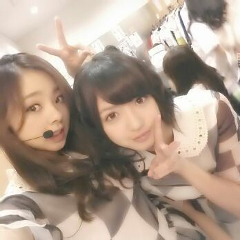

はーーい ☆//
Rottyで-す .
はぁはぁはぁ。
今日も 反則な位にね、ぅん。
楽し過ぎました。
大阪の皆さんーーー ))))
本間に今日はありがとーーーっ！！！
大阪の方も、
遠くから足を運んでくれた方も
そして 日村さん )))
みーーんなっ、ありがとうございます！
めっちゃめっちゃ
楽しかったぁ〜(о´∀`о)
盛り上がりましたね ！
大阪パワーはオープニングから
伝わりました (^▽^)あーはん
あ〜、テンション上がって
コンポタージュこぼして
しもーたやん !!!
自分も今日
コンポタージュこぼしたー★
って人いますぅ？？笑
( 手あげて )
・・・・
今 手あげた人には
これからコンポタージュって
呼ぶ♪
(о´∀`о)(о´∀`о)(о´∀`о)(о´∀`о)(о´∀`о
そしてそして ぴょん.
今日は 初のヘアスタイルを
しました！
今の所、全国
全部違う髪形でいってんねん^^
昼の部のヘアスタイルは
毛先 巻き巻き ♪
左側にねっ、
ちょっと編み込んでからの
みつ編みをしてるの \(^ω^)/

まあや可愛い〜。
そして 夜の部も、、、
ありゃりゃりゃ〜(о´∀`о)
はーふツインテールよ 。
恥ずかちーっ(〃ω〃)
どうかのぅ？？
生駒ちゃんが 安室ちゃんだ。
ってゆう ありえない感想を
言ってくれた。
ほめすぎだお(・ω・)
安室ちゃんは 100倍可愛い。
でもうれちかったよんよん。
アリガトネ☆ハー!!!笑
そして、さゆりんごwww
21さい お誕生日おめでと〜う♪
さゆりんは やっぱり同じ地元だし
明るくて可愛いお姉さん(*´ω｀*)
大事な 大好きなメンバーです！
歌とダンスは苦手なりんごちゃん。
でもトークは
今日だってそうやったけど
これでもかーっ！
って位しゃべる(*^^*)笑
さすが『 関西の林檎 』あーはん。
これからもよろちくねっ！！
お人形さんみたいな
さゆりんの顔 好きだよん♪
よし )))) ってことで、
次は、名古屋やな＼(^o^)／
盛り上がっていくで ！
ろってぃ- 明日も実は
楽しみなことがあるねん\(・▽・)/
なんやろーねーー？？
お楽しみにっ //
ぢゃあ 名古屋のみんなーーっ
待っててねん(/〃▽〃)/
ろってぃ-でしたーん のし。